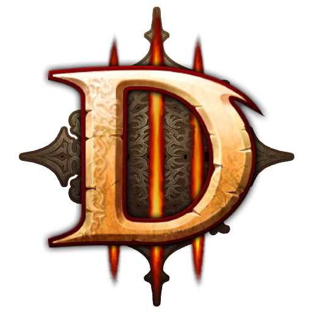
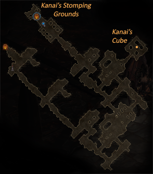
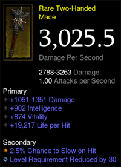

|  |
Quick Season Start Tracker
Season 20: The Forbidden Archives
|
|
This tracker was built to guide new and casual Diablo 3 players through a quick season start.
Click on the boxes to check off items as you go. Refer to the Progression Tips below the tracker for more information. Use this tracker together with other resources and guides available to you. |
| Start | Lvl 1-39 | Lvl 40-70 | Post |
|---|---|---|---|
| Create a new seasonal character | Choose your leveling strategy (Tip #3) |
Lvl 40: Craft/enchant lvl 70 2h mace with reduced level req. (Tip #5) |
Complete the Season Journey and claim your reward class set |
| Complete challenge rift and open reward bag (Tip #1) |
Lvl 7/10: Check "fence" vendors for +dmg jewlery and other items | Lvl 61: Craft armor and weapons at Blacksmith | Run low-level Greater Rifts to get Legendary Gems |
| Switch to Master difficulty Equip a pet, wings, and portrait |
Lvl 8: Craft a 2h weapon at blacksmith and socket ruby on helm | Lvl 70: Equip your fourth passive skill | If you have the gold, buy the Hellfire Amulet/Ring plans from Squirt in Act II town |
| Hire templar, take his weapon, give him enchantress weapon | Lvl 10: Equip your first passive skill | ||
| Do a boss+bounty combo for initial items/experience | Lvl 20: Equip your second passive skill | ||
| Switch to Hard difficulty Level Blacksmith and Mystic |
Lvl 21/23: Craft and equip the Cain/Born sets for +70% exp | ||
| Switch to Normal difficulty Get Kanai's Cube from Act III - Ruins of Sescheron |
Lvl 30: Equip your third passive skill | ||
| Upgrade/extract lvl 70 item Roll blood shards at Kadala (Tip #2) |
Lvl 33: In group, snapshot and run bounties in a lvl 1 T6 game (Tip #4) |
Progression Tips
|
Tip #1
Complete the Challenge Rift
|
The rewards you get from completing a Challenge Rift at the beginning of the season can help you speed up your start considerably. To be able to attempt the Challenge Rift, you need to have at least completed a lvl 1 Greater Rift on any character in your account. Since the Challenge Rift resets every Monday afternoon, make sure you don't complete it in the week the new season starts.
|
|||
|
Tip #2
Roll Blood Shards and Upgrade a Rare Weapon
|
Rolling Blood Shards
As explained above, you can spend your Blood Shards at Kadala for a chance to get legendary items that grant damage multipliers to your skills, helping you level faster. This is purely based on luck, so you may or may not get what you are looking for. The items you can get from rolling shards at Kadala depend on your class and level. While you can check the complete list of legandaries per class/level by using the Kadala Calculator, I have included some recommendations below.
Upgrading a Rare Weapon
The amount of Death's Breaths you were rewarded allow you to upgrade only one lvl 70 rare weapon to a legendary and extract its legendary power so that it can be available to your character throughout leveling.
Like rolling blood shards, this is also purely based on luck. With most classes, you have a very low chance of upgrading to a legendary item with a multiplier that would help you through your leveling journey. For this reason, this method is most viable for Necromancers and Demon Hunters, unless you want to take the chance at it with another class. If you decide to hold out on ugprading a weapon, you will have Death's Breaths available to cube the legendary powers of legendaries you get throughout leveling. This can help you level a great deal, especially with the Season 20 theme.
In order to upgrade the weapon and extract its power, you will need to acquire Kanai's Cube from Ruins of Sescheron in Act III. You will also need to have your Blacksmith fully leveled in order to craft a lvl 70 rare weapon. I have included some recommendations for what kind of weapon to upgrade for each class below.
Roll/Upgrade Table - The chance to upgrade to one of the items listed is shown as (# of listed items/# of total options - X%)
Note: Other than rolling blood shards for class-specific items, rolling for pants/helms at lvl 1 for Pox Faulds and Leoric's Crown are good options for any class.
|
|||||||||||||||||||||||||
|
Tip #3
Choose a Leveling Strategy
|
Chosing your leveling strategy will depend if you are playing solo or in groups. Playing in groups is the most efficient since it applies the "Strength in Numbers" buff, which grants you gold find, magic find, and experience bonuses that are multiplicative to any pre-existing stats you have from items. Regardless of which leveling strategy you use, the following tips can help you get experience faster:
Here are some of the most popular leveling strategies:
Nephalem Rifts
While running Nephalem Rifts is the easiest way to level your new seasonal character whether solo or in groups, it is slower than other available leveling options. When choosing this strategy, players can start running rifts in hard difficulty and increase it as multipliers become available.
|
|||||||||||||||||||||||||||||||||
|
Massacre Bonuses
Players can get these bonuses when clearing adventure mode content in Acts I-V except when in Nephalem Rifts and Greater Rifts. They are an experience bonus you receive when you kill multiple enemies within a short time in between each kill. When playing solo, some players prefer using this method to level faster. The table to the right shows all possible massacre bonuses and their experience reward.
Recommended maps to clear using this method include:
While this method can be efficient if you are able to keep large massacre bonuses going, clearing the same content can get quite boring.
|
Massacre Bonus Table
|
|||||||||||||||||||||||||||||||||
|
The "Cleavers Method"
This method allows you to get an experience boost at the beginning of the season by using map mechanics to your advantage. In order to try this, turn the difficulty to Torment VI and go to Halls of Agony Level 1 in Act I. Go through the map until you find a corridor with big butcher-like cleavers swinging up and down. Attacking and dragging monsters to them will kill them and grant you a considerable amount of experience.
If you are working with a coordinated group, you can also consider trying to get a game with a Halls of Agony Level 1 bounty to kill a boss. Succesfully killing this boss with the cleavers will grant you considerably more experience per run. To find bounties more efficiently, have everyone in your group start a game separately and everyone to join whoever gets it.
|
||||||||||||||||||||||||||||||||||
|
Kanai's Stomping Grounds (Season 20 Only)
During season 20, a March-only event spawns in Act III - Ruins of Sescheron. To access it, players must follow the same path they would take to reach Kanai's Cube and get to the Elder Sanctum map. Once you have reached the cube, turn left and go straight through to Kanai's Throne Room. He will wake up and open up a portal to his stomping grounds where he will fight with you and effectively one-shot monsters.

Elder Sanctum Map in Ruins of Sescheron - Act III
If done in Torment 6 difficulty, this can allow for speedy leveling. This temporary level has good monster density for massacre bonuses and grants a gold and experience reward upon completion. If elites are too tanky, just skip them, kill density, and repeat the event as many times as needed. Make sure your weapons are upgraded every other run, since King Kanai's damage depends on your damage.
|
||||||||||||||||||||||||||||||||||
|
Tip #4
Snapshot Bounties
|
This tip can only be done in groups and is only helpful if you are completing the Seasonal Journey as part of your progression plan to get your seasonal set. Following the steps below will allow you to run through Torment 6 bounties substantially faster with no need for additional multipliers. It is recommended to wait until level 33 to do this so all your party memebers have movement abilities.
All party members should be able to one-shot all monsters and bosses with this trick, making completing bounties as part of the Season Journey faster. In contrast, running Torment 6 bounties once you finish leveling will take substantially longer as monsters and bosses scale up to lvl 70.
|
|
Tip #5
Use a lvl 70 Weapon Early
|
At lvl 40, craft a rare lvl 70 two-handed mace for a chance to use it as early as lvl 40 with reduced level requirement. If you have a legendary offhand with a multiplier, do not settle for a one-handed weapon instead, cube your offhand and go for a two-handed mace.
|

Level 70 Weapon with Reduced Level Requirement
|
|
Note: Always check the legendary weapon you upgraded from a rare to see if it has rolled with reduced level requirement. In the event that your upgraded weapon rolls ancient, it can also roll with an extra 10 levels of reduced level requirement (max -40 levels), meaning that best case scenario, you can use a lvl 70 ancient legendary weapon at lvl 30. While it is expensive and it requires Forgotten Souls, you can echant a legendary weapon to try at a chance for reduced level requirement.
|
||
Resources
Created and maintained by Vanlioko#1916
Work in progress - please consider providing feedback on this reddit post
Tracker coding adapted from Season Journey Tracker by @bagstone1
|
Mar 5, 2020 - Added chance to upgrade to items listed to Roll/Upgrade Table
Mar 2, 2020 - Updated content based on feedback from sVr
Known Issues
|